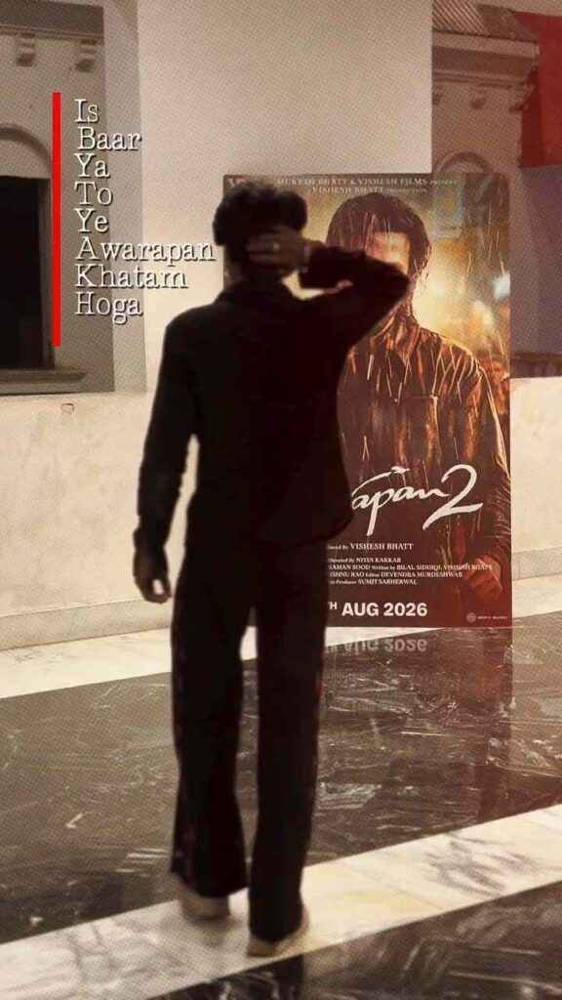

If you are looking for the Trending Awarapan 2 VN Code Template, then you are at the right place. This trending VN template is a simple way to create a stylish and cinematic video using your own photos or short clips. Instead of creating every transition, effect, animation, and timing manually, you can use a ready-made VN project and customize it with your own media. The Awarapan 2 VN Code Template is especially useful for creating Instagram Reels, YouTube Shorts, and movie-style edits without requiring advanced video editing skills.
What Is Awarapan 2 VN Code Template?
The Awarapan 2 VN Code Template is a pre-designed editing project that can be imported into the VN Video Editor app using a VN Code or supported template-sharing method. Once the project is imported, you can replace the sample photos and videos with your own content while keeping the existing editing style, transitions, timing, and effects. This makes the editing process much faster and easier for beginners. Depending on the specific template, you may also be able to change text, music, effects, transitions, and other editable elements to create a personalized Awarapan 2-themed video.
How to Use Awarapan 2 VN Code Template
Using the Trending Awarapan 2 VN Code Template is quite easy. First, install the VN Video Editor app on your smartphone and make sure you are using a compatible version. Open VN and find the scanner or template-import option available in your app. Scan the Awarapan 2 VN Code or import it using the supported method. After the project opens, check the timeline and see how many photos or videos are required. Replace the sample media with your own photos or clips, adjust the available elements if needed, preview the complete edit, and then export your finished video.

Awarapan 2 VN Template for Instagram Reels
The Awarapan 2 VN Template for Instagram Reels can help you create an attractive cinematic video for your social media profile. For better results, select high-quality photos with clear faces, good lighting, and different poses or backgrounds. If the template contains fast transitions, choose images that remain clear even when displayed for a short time. Make sure your important subjects are positioned properly so they do not get cropped during the editing process. After completing the edit, preview the entire video and check the framing, transitions, text, and overall quality before uploading it to Instagram.
Tips for Better Awarapan 2 VN Edits
For a better Awarapan 2 VN Code Template edit, use original high-quality photos and videos instead of heavily compressed media. Try to match your content with the mood and timing of the template so that the transitions look smooth and natural. Avoid adding too many unnecessary effects because the original template may already contain a balanced combination of transitions and animations. If the VN Code does not work, first check that the code image is clear and complete, update the VN app if necessary, and try scanning it again. If the problem continues, the particular template may no longer be available or compatible.
How to Export Awarapan 2 VN Video
After customizing the Awarapan 2 VN Template, carefully preview your complete project before exporting it. Check every photo, video clip, transition, text element, and audio section to make sure everything is working correctly. When you are satisfied with the result, use the Export option in VN and select suitable resolution and frame-rate settings according to your requirements. For Instagram Reels and YouTube Shorts, a vertical video format is generally suitable. After exporting, watch the saved video once before uploading it to social media. This final check can help you notice cropping, quality, or timing problems before publishing.
Final Words
I hope this guide helps you create your own Trending Awarapan 2 VN Code Template video easily. VN templates are useful for beginners because they reduce the amount of manual editing required and allow you to focus on selecting good photos and videos for your final project. Simply import the available VN Code, replace the sample media with your own content, customize the editable elements, and export the finished video. If you enjoy trending VN templates, cinematic edits, and movie-style editing ideas, keep visiting Prompt Library for more VN Codes, CapCut Templates, AI Photo Editing Prompts, AI Video Prompts, and other useful editing resources.